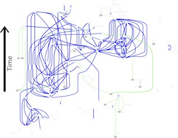

Stochastic Modeling of Disease Dynamics on Networks
Measuring Text Reuse Patterns in Articles on arXiv.org
-

Veggies sunt bona vobis
Komatsuna prairie turnip wattle seed artichoke mustard horseradish taro rutabaga ricebean carrot black-eyed pea turnip greens beetroot yarrow watercress kombu.